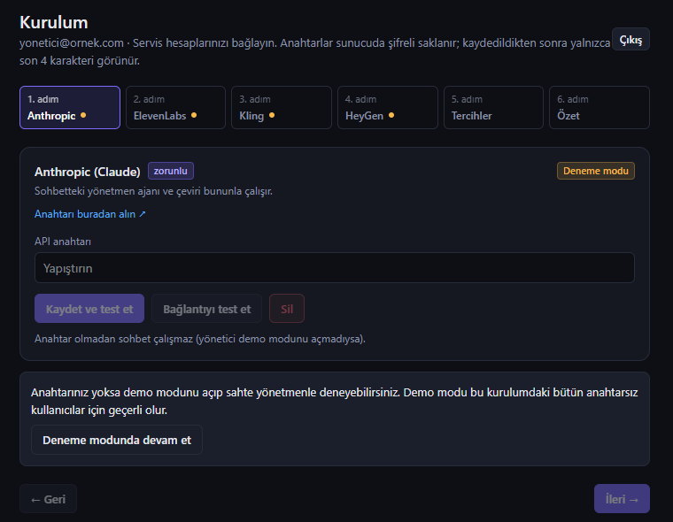
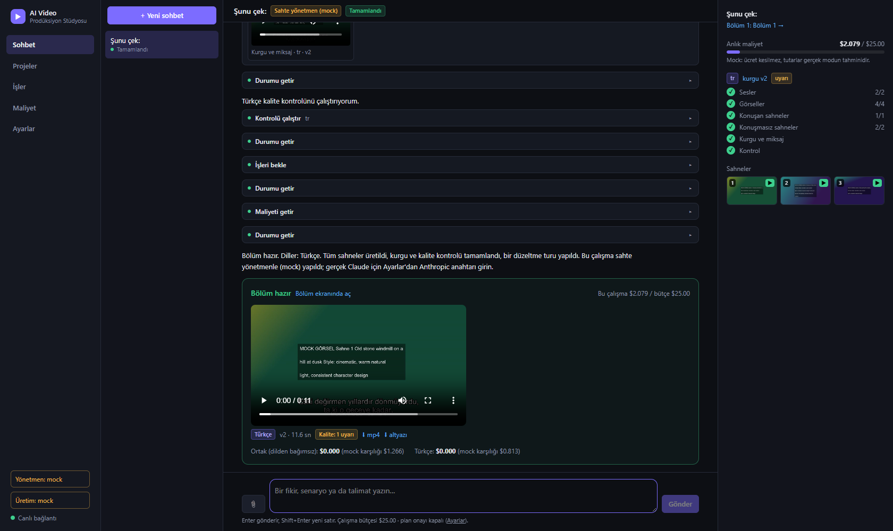
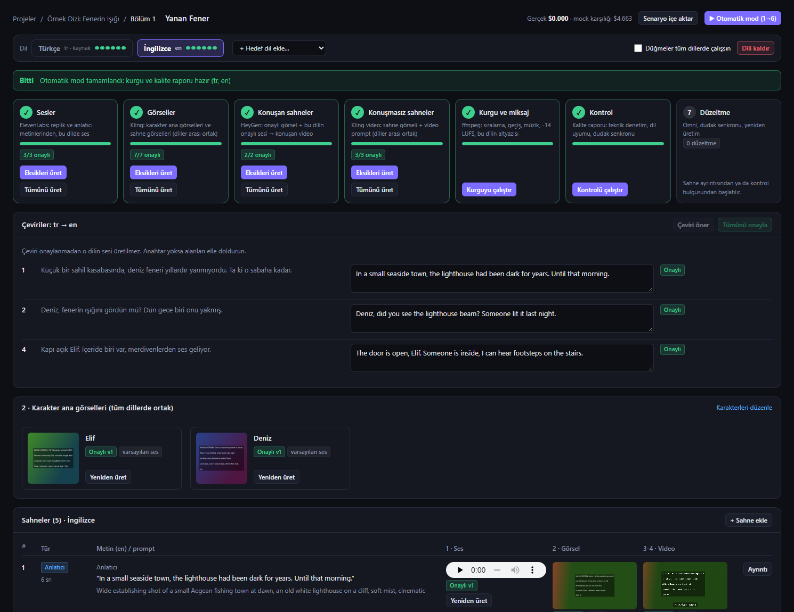
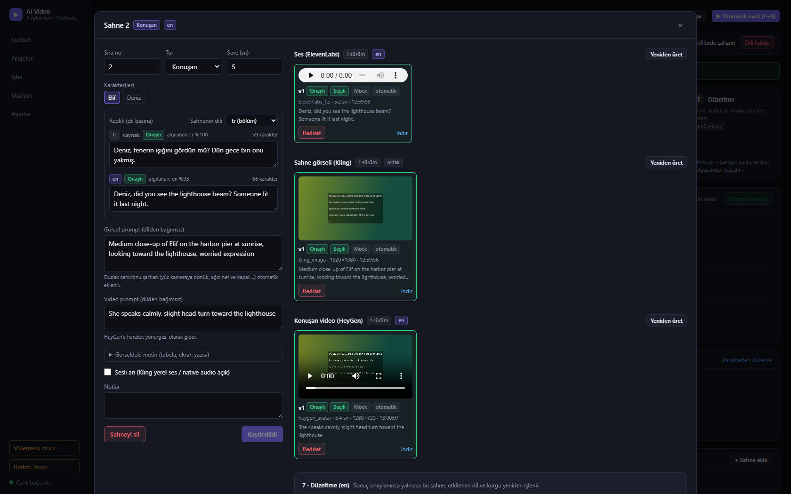

Nasıl çalışır: tek mesajdan bitmiş bölüme.
ElevenLabs, Kling ve HeyGen'i ayrı ayrı sitelerinden elle kullanmak yerine üçünü tek ekrandan yönetir. Uygulamanın merkezi bir sohbet ekranıdır: bir fikir, senaryo ya da talimat yazarsın; yönetmen (Claude) karakterleri ve sahneleri çıkarır, sesleri seçer, bütün üretimi sırayla çalıştırır, çıktılara bakıp onaylar ve bitince videoyu sohbete koyar. İstersen her şeyi elle de yönetebilirsin.
baslat.cmd dosyasına çift tıkla.http://127.0.0.1:8765 adresi gelir.| Ekran | Ne için |
|---|---|
| Sohbet | Yönetmene yazdığın yer. Solda eski sohbetler, sağda canlı üretim paneli. |
| Projeler | Elle kontrol: karakterler, bölümler, sahneler, sürümler, onaylar. |
| İşler | Süren ve biten bütün üretim işleri; hata verenleri yeniden deneme. |
| Maliyet | Proje, bölüm ve dil bazında tahmini harcama. |
| Ayarlar | Hesap, Bağlantılar (servis anahtarları) ve Tercihler (dil, bütçe, modeller). |
| Yönetim | Yalnızca yöneticide: kullanıcılar, davetler, ortak anahtarlar, demo modu. |

İlk girişten sonra sihirbaz altı adımda servis hesaplarını bağlar. Her adımda anahtarı yapıştırıp Kaydet ve test et'e basarsın; uygulama servise ücretsiz bir sorgu gönderir ve sonucu gösterir: bağlı ya da hatalı, kalan kredi, ElevenLabs'te ses kütüphanen, Kling'de erişebildiğin özellikler, HeyGen'de avatar seçenekleri.
| Adım | Ne işe yarar | Atlanırsa |
|---|---|---|
| 1 · Anthropic | Sohbetteki yönetmen (Claude) ve çeviri. Zorunlu. | Demo modu açıksa sahte yönetmen |
| 2 · ElevenLabs | Karakter sesleri ve anlatıcı (1. adım) | Sesler deneme modunda |
| 3 · Kling | Görseller, konuşmasız videolar, düzeltme (2, 4, 7. adımlar) | Deneme modunda |
| 4 · HeyGen | Konuşan sahneler (3. adım) | Deneme modunda |
| 5–6 · Tercihler, Özet | Dil, bütçe, plan onayı, çıktı biçimi (16:9 / 9:16); sonra hangi servisin bağlı olduğunun özeti | |
Ekranın üstünde her servis için bir nokta durur: yeşil bağlı, mavi ortak (kurum) anahtarı, sarı deneme modu, kırmızı hatalı. Yanındaki zil bildirimleri gösterir (“bölümün hazır”, “şu bağlantıyı yenile”). Sağdaki e-postana tıklayınca hesap menüsü ve çıkış açılır.
Anahtar geçersiz çıkarsa ya da kredisi biterse işler hata vermez, “bağlantı bekliyor” durumunda durur; sohbette ve bildirimde hangi bağlantıyı yenileyeceğin yazar. Bağlantılar sayfasında anahtarı yenileyip test ettiğinde üretim kaldığı yerden devam eder.
Yönetim → Davet oluştur tek kullanımlık bir kayıt bağlantısı üretir; bağlantıyı kişiye gönderirsin. Şifresini unutan kullanıcı için aynı yerden sıfırlama bağlantısı üretilir. İstersen bir servis için ortak anahtar tanımlarsın: kendi anahtarı olmayan kullanıcılar, aylık sınırları içinde onu kullanır.

| Amaç | Örnek mesaj |
|---|---|
| Fikirden bölüm | “Terk edilmiş bir deniz fenerinin sırrını anlatan 5 sahnelik kısa bir bölüm yap” |
| Hazır senaryodan | Ataş düğmesiyle senaryo dosyasını (metin, CSV, JSON) ekle: “Ekteki senaryoyu çek” |
| Başka dilde de | “İngilizce sürümünü de çıkar” |
| Üretim sürerken düzeltme | “3. sahnede kadın gülsün”, “anlatıcının sesini değiştir” |
| Durdurmak | “durdur” yaz ya da üstteki Durdur düğmesine bas |
Yönetmenin yaptığı her işlem sohbette küçük bir satır olarak görünür; satıra tıklarsan ayrıntısını açarsın. Üretilen ses, görsel ve videolar sohbetin içinde oynatılır. Sekmeyi kapatsan da üretim arkada sürer.
Sohbete referans görsel (karakter için), müzik ve efekt dosyası da ekleyebilirsin. Elle ekranlarda yaptığın değişiklikleri yönetmen bir sonraki mesajında görür.
| Ayar | Ne yapar |
|---|---|
| Çalışma başına bütçe | Varsayılan 25 dolar. Sınırı aşacak iş hiç başlatılmaz. Sınıra yaklaşınca yönetmen durur ve sohbette “bütçeyi artır” düğmeleri çıkar. |
| Üretimden önce planı onayla | Varsayılan kapalı. Açarsan yönetmen sahne listesini ve tahmini maliyeti gösterir, tek bir onayını bekler. Kapalıyken sormadan ilerler. |
| Yeniden deneme sınırı | Yönetmen bir sahneyi en fazla 3 kez yeniden ürettirir. Olmazsa sahneyi “elle bakılmalı” diye işaretler ve devam eder. |
Bütçe ve plan onayı Ayarlar ekranındadır. Yönetmenin kendi (Claude) maliyeti de toplam maliyete eklenir.
Her projenin bir varsayılan dili vardır. Sen dil söylemezsen yönetmen mesajının yazıldığı dili kullanır. Bir bölüm birden fazla dilde üretilebilir.
| Dile bağlı (her dilde ayrı üretilir) | Ortak (bir kez üretilir) |
|---|---|
| Sesler, konuşan sahne videoları, altyazı, kurgu, kalite raporu | Karakter görselleri, sahne görselleri, konuşmasız ve anlatıcı sahne videoları |
Dr. = Doktor).Projeler menüsünden bir bölümü açınca bu ekran gelir. Üstte dil seçici vardır: metinler, sesler, videolar, adım durumu ve çıktı seçtiğin dile göre gösterilir.

| Düğme | Ne yapar |
|---|---|
| Eksikleri üret | Üretilmemiş ve güncel olmayanları üretir. En çok kullanacağın düğme. |
| Tümünü üret | O adımdaki her şey için yeni sürüm üretir; hepsi ücretli olduğundan önce sorar. |
| Üret / Yeniden üret | Sahne satırında durur; yalnızca o sahne için çalışır. |
| Onayla | Taslağı kabul eder. Bir adım, ihtiyaç duyduğu çıktılar onaylanmadan başlamaz. |
| Düğmeler tüm dillerde çalışsın | İşaretliyken adım düğmeleri seçili dil yerine bütün hedef dillerde çalışır. |
| Otomatik mod (1→6) | Yönetmen olmadan, onay beklemeden baştan sona çalıştırır. |
Her yeniden üretim yeni bir sürüm oluşturur; eskisi silinmez. Sürümler yan yana durur, istediğini seçersin. Her sürümde kimin onayladığı da yazar (sen, yönetmen ya da otomatik mod).

Repliği değiştirirsen o dilin sesi ve konuşan videosu “güncel değil” olur; “Eksikleri üret” yalnızca onları yeniler. Diğer diller etkilenmez.
Kurgudan sonra her dil için bir rapor çıkar. Her bulgu bir sahneye ve bir zamana bağlıdır; zamana tıklarsan oynatıcı o ana gider.
Düzeltmeyi onayladığında yalnızca o sahne, etkilenen dil ve kurgu yeniden işlenir.
Anahtarını girmediğin her servis senin için deneme modunda çalışır: servise bağlanmaz, ücret kesilmez. Ses yerine bip sesi, görsel ve video yerine yazılı renkli kareler üretir. Yönetici demo modunu açtıysa Anthropic anahtarı olmadan da sohbet edilir; o zaman önceden yazılmış bir sahte yönetmen çalışır: fikrini anlamaz, hazır bir örnek senaryoyu (ya da eklediğin dosyayı) çeker.
| Servis | Anahtar nereden alınır |
|---|---|
| Anthropic (Claude) | console.anthropic.com → API Keys |
| ElevenLabs | elevenlabs.io → Developers → API Keys |
| Kling | kling.ai/dev/api-key (anahtar yalnızca bir kez gösterilir, hemen kopyala). Webhook Secret alanı isteğe bağlıdır. |
| HeyGen | HeyGen → Settings → API |
Kling, Omni ve dudak senkronunda kaynak videoyu yalnızca internet adresiyle kabul ediyor. Video yeni üretildiyse düzeltme kendiliğinden yapılır. Adres eskimişse İşler ekranında talimat, indirme bağlantıları ve yükleme alanı açılır: videoyu indirip Kling sitesinde düzeltir, sonucu yüklersin.
| Durum | Ne yapmalı |
|---|---|
| Sohbette “Bütçe sınırı” kutusu | Devam etmek için kutudaki artırma düğmelerinden birine bas ya da durdur. |
| Sohbette “Çalışma durdu” | Hata iletisini oku; Kaldığı yerden devam et düğmesi aynı yerden sürdürür. |
| “Hiçbir iş başlatılamadı” iletisi | İleti nedeni yazar. Genellikle bir önceki adımın çıktısı ya da çeviri onaylanmamıştır. |
| “Kurguyu çalıştır” tıklanmıyor | Bir sahnenin onaylı videosu ya da o dilin sesi yok; düğmenin üstüne gelince hangisi olduğunu yazar. |
| “Güncel değil” etiketi | Replik, ses ya da görsel değişmiş. O adımda “Eksikleri üret” de. |
| İşlerde “Bağlantı bekliyor” | Bir servisin anahtarı geçersiz ya da kredisi bitmiş. Ayarlar → Bağlantılar'da yenile ve test et; üretim devam eder. |
| Sayfa açılmıyor | Siyah pencere kapanmış olabilir. baslat.cmd dosyasına yeniden çift tıkla. |